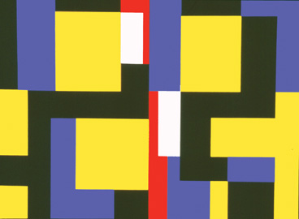

Hello! In this paragraph, I will be explaining a little bit of why I chose this digital drawing as well as some of the history about the artist. The artist I chose was Mary Henry. She was born in 1913 and died in 2009, which was amazing as she almost lived to 100 years old! However, she did not adapt as quickly to the internet because of her age, and didn't have the opportunity to create this beautiful Diptych acrylic geometric painting in digital form. So, you could say I did it for her. What is seen in this beautiful piece of artwork is geometrical shapes, but also a technique that was growing to be more popular during her time. As people changed, so did everything else, including artwork, sculptures, and even the architecture. So, this technique of geometrical shapes was made and referenced for future generations, like mine.
